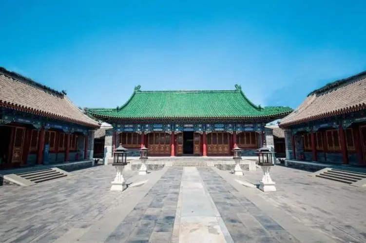

Prince Gong's Mansion
From： baike.baidu.com

Prince Gong's Mansion, also known as Prince Kung's Mansion, is located near Shichahai to the northwest of the Forbidden City in Beijing. It consists of large siheyuan-style mansions and gardens and is one of the most exquisite and best-preserved imperial mansions in Beijing.The mansion buildings are located in the south; the gardens are in the north. The buildings include several siheyuan courtyards, two story buildings, and a grand Beijing opera house. Some of the courtyards house permanent exhibitions on the history of the mansion as well as temporary art exhibitions.In addition to the mansion, there is a 28,000-square-metre garden, with 20 scenic spots, pavilions, artificial hills including rock originating from the Lake Tai in Jiangsu, and ponds.
Originally constructed for Heshen, an official highly favored by the Qianlong Emperor, it was later renamed after Prince Gong, a Manchu prince and influential statesman of the late Qing dynasty, who inhabited the mansion in the late 19th century. There are three luxurious treasures in Mansion, Xiyangmen in the garden, stele carved with the Chinese letter called ‘Fu’, which means fortune, and Great Drama Building indoor.Two stone lions guard the main gate, and magnificent buildings stand to the fore of the mansion, with an elegant garden at the rear. On the wall of the main hall hangs a plaque inscribed with three characters "Bao Guang Shi" in the calligraphy of Emperor Xianfeng. The buildings at the forefront of the mansion are on three axes, and apart from a two-story building consisting of ninety-nine and half rooms, all are in the traditional style. Duofu Study is on the eastern axis, and its structure is in the Ming style. On each of the two side axes are four courtyards, the second courtyard on the western axis being strikingly spacious. In the third courtyard, called Xijin Studio, there is a seven-roomed, exquisitely furnished hall. All the beams and pillars are made of nanmu, and its sandalwood partitions are reminiscent of those found in Ningshou Palace in the Forbidden City. Between the buildings and the rear garden there stands a 165-meter-long two-story building.
The garden in Prince Gong's Mansion is named Cuijin, meaning concentrated cream of the most beautiful flowers, and to this day it lives up to its name. The garden covers 28,000 square meters, and is surrounded by man-made hills on four sides. The main peak, constructed from Taihu rocks, is in the north. The garden has an arched stone gate in typical Western architectural style, and upon entering the garden, one can see the five-meter high Dule Peak, which is a rock procured from Lake Tai in southern China. Behind it is the Bat Pond (Bat is a homonym of happiness in Chinese). Beyond the pond stands the Anshan Hall and opposite, at the center of the garden, is a hill bearing a stone tablet inscribed with the Chinese character "fu" (happiness) in the calligraphy of Emperor Kangxi (1662-1723). Behind the hill are masterpieces of garden architecture, with more than 20 scenic spots. In addition to its artificial hill, trees, flowers, pavilions and terraces, the garden also contains the unique feature of its own theater. This theater is lofty and spacious, with subtle lighting, and on its walls Chinese wisteria and green leaves are painted, giving the audience the feeling they are sitting beneath trellises. The floor is paved in pseudo-gold brick, and the seats consist of old-fashioned wooden armchairs furnished with square tables. The performers and the audience are in close proximity, so there is no need for audio amplifying equipment. Here, people can enjoy kunqu, Peking Opera and imperial music, a unique experience full of Qing historical significance.
Featured Attractions: The Peking opera house inside the mansion not only stages Beijing opera performances, but also other prominent forms of Chinese opera as well. In August 2008, the Kunqu performance group from the "Jiangsu Kunqu House" performed at the Prince Gong Mansion for a week's run with their program Floating Dreams.
 330445074@qq.com
330445074@qq.com